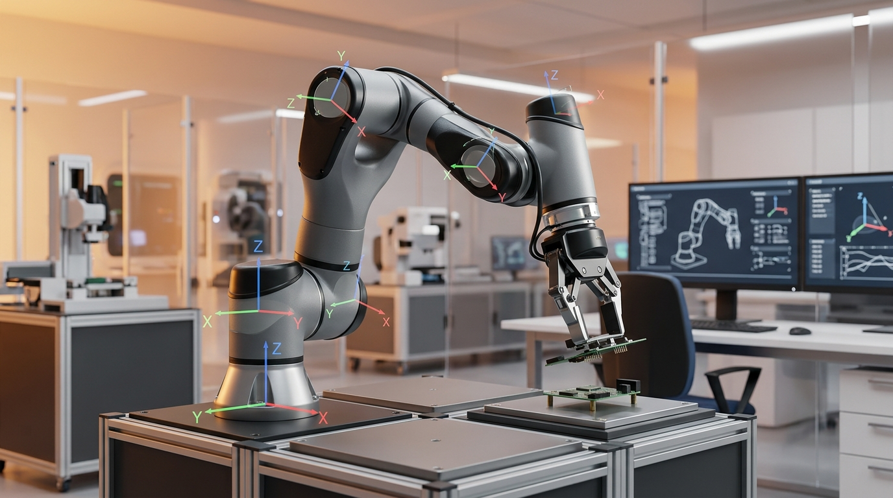
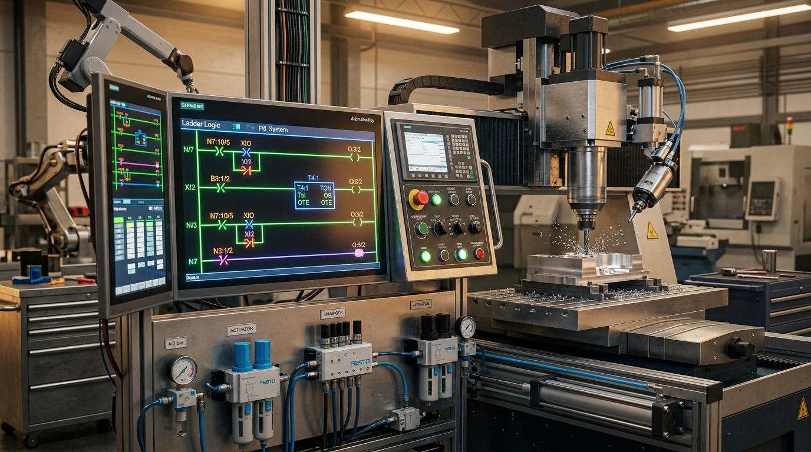
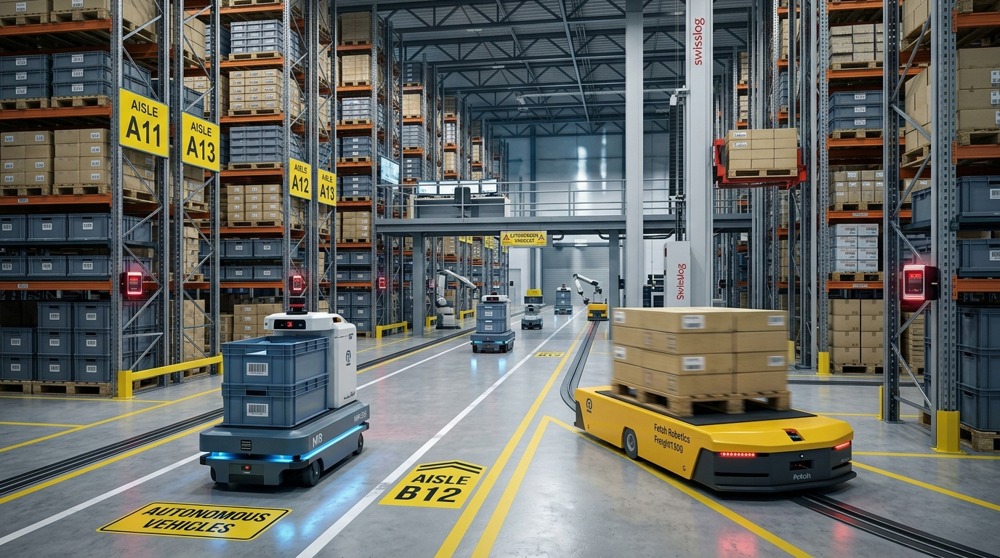
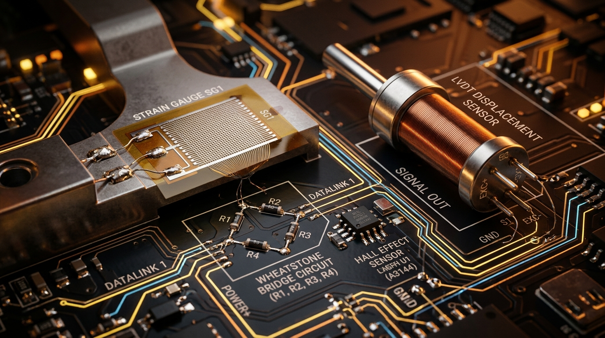
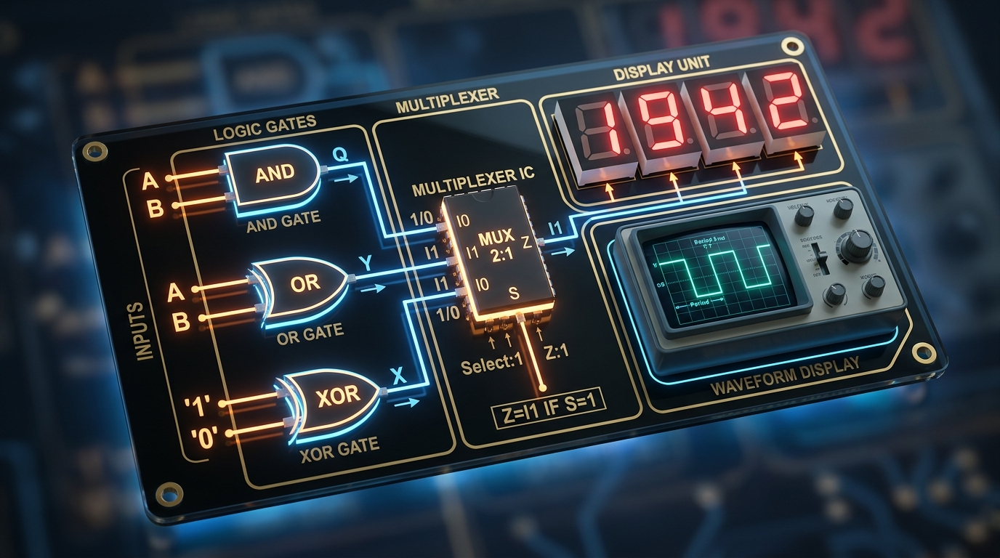
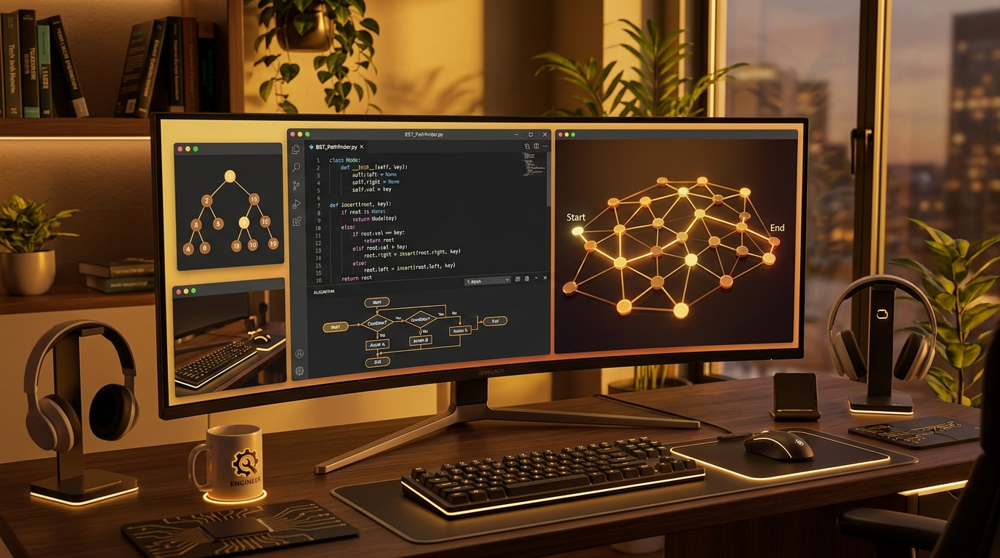
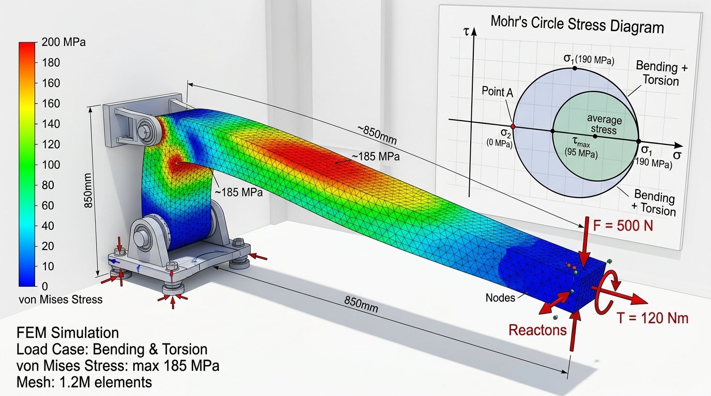
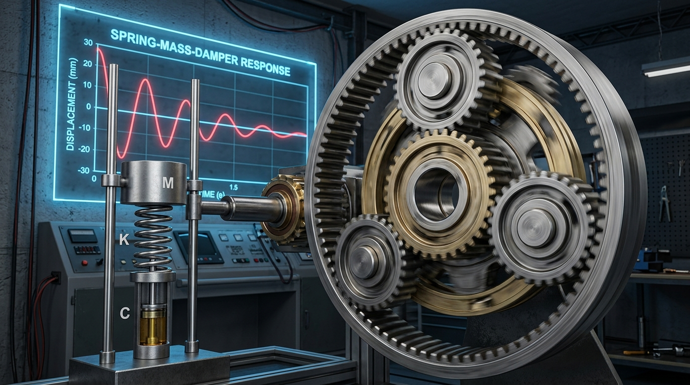

⏳ GATE 2027 COUNTDOWN
Target: Feb 2027
00
Days
00
Hours
00
Mins
00
Secs
Make every single second count!
⏱️ FOCUS STUDY TIMER
25:00
🧘 Deep focus mode: 100% conceptual absorption.

Introduction to Robotics
Spatial Transforms, DH Parameters & Forward Kinematics
IIT Kanpur & IIT Madras
Prof. Ashish Dutta & Prof. T. Asokan
Key Lectures to Watch:
• Week 1 (Lec 1–4): Robot Classification, Serial vs Parallel, DOF, Workspace.
• Week 2 (Lec 5–8): 2D/3D Rotation Matrices, SO(3) Properties, 4×4 HTM.
• Week 3 (Lec 9–12): Denavit-Hartenberg (DH) Convention & Link Transformations.
• Week 4 (Lec 13–16): Forward & Inverse Kinematics of 2R/3R Arms.
• Week 11–12: End-Effectors, PTP vs Continuous Path, Repeatability & Accuracy.
• Week 1 (Lec 1–4): Robot Classification, Serial vs Parallel, DOF, Workspace.
• Week 2 (Lec 5–8): 2D/3D Rotation Matrices, SO(3) Properties, 4×4 HTM.
• Week 3 (Lec 9–12): Denavit-Hartenberg (DH) Convention & Link Transformations.
• Week 4 (Lec 13–16): Forward & Inverse Kinematics of 2R/3R Arms.
• Week 11–12: End-Effectors, PTP vs Continuous Path, Repeatability & Accuracy.
💡 Syllabus Takeaway: Focus on deriving DH parameter tables (θ, d, a, α) and calculating end-effector position using forward transformation matrices ⁰Tₙ.

Industrial Automation and Control
PLCs, Ladder Logic, CNC, Hydraulics & Electric Drives
IIT Kharagpur
Prof. Siddhartha Mukhopadhyay
Key Lectures to Watch:
• Module 4 (Lec 14–18): PLC Architecture, Scan Cycle, Ladder Logic, Timers & Counters.
• Module 5 (Lec 19–22): CNC Machines, Interpolation, Multi-Axis Positioning.
• Module 7 (Lec 27–31): Hydraulic & Pneumatic Actuators, Valves, FRL Unit.
• Module 8 (Lec 32–36): DC Motor, Stepper, and BLDC Speed-Torque Characteristics.
• Module 4 (Lec 14–18): PLC Architecture, Scan Cycle, Ladder Logic, Timers & Counters.
• Module 5 (Lec 19–22): CNC Machines, Interpolation, Multi-Axis Positioning.
• Module 7 (Lec 27–31): Hydraulic & Pneumatic Actuators, Valves, FRL Unit.
• Module 8 (Lec 32–36): DC Motor, Stepper, and BLDC Speed-Torque Characteristics.
💡 Syllabus Takeaway: Master PLC scan cycles, TON/TOF timer contacts, stepper step angle formulas, and hydraulic/pneumatic cylinder force equations (F = P · A).

Automation in Manufacturing & CIM
AGVs, AS/RS Storage Systems, Barcodes & RFID
IIT Guwahati
Prof. Shrikrishna N. Joshi
Key Lectures to Watch:
• Week 1–2: CIM Architectures, Fixed vs Flexible Automation.
• Week 6–7: Automated Material Handling, AGV Guidance & Routing.
• Week 8: AS/RS Storage Systems, Single/Dual Command Cycle Times (T_sc, T_dc).
• Week 9: Auto-ID & Data Capture (AIDC): 1D/2D Barcodes, RFID Transponders.
• Week 1–2: CIM Architectures, Fixed vs Flexible Automation.
• Week 6–7: Automated Material Handling, AGV Guidance & Routing.
• Week 8: AS/RS Storage Systems, Single/Dual Command Cycle Times (T_sc, T_dc).
• Week 9: Auto-ID & Data Capture (AIDC): 1D/2D Barcodes, RFID Transponders.
💡 Syllabus Takeaway: Understand AS/RS travel time equations and passive vs active RFID frequencies.

Sensors and Actuators
Transducers, Bridge Circuits, LVDT & Signal Conditioning
IISc Bangalore
Prof. Hardik J. Pandya
Key Lectures to Watch:
• Lec 1–6: Strain Gauges (Gauge Factor GF), RTD (PT100), Thermistors.
• Lec 7–11: LVDT Inductive Displacement Transducers, Capacitive Sensors.
• Lec 12–15: Piezoelectric Charge Transducers, Hall Effect Sensors (V_H = R_H · I · B / t).
• Lec 16–25: Optical Quadrature Encoders, 3-Op-Amp Instrumentation Amplifiers.
• Lec 1–6: Strain Gauges (Gauge Factor GF), RTD (PT100), Thermistors.
• Lec 7–11: LVDT Inductive Displacement Transducers, Capacitive Sensors.
• Lec 12–15: Piezoelectric Charge Transducers, Hall Effect Sensors (V_H = R_H · I · B / t).
• Lec 16–25: Optical Quadrature Encoders, 3-Op-Amp Instrumentation Amplifiers.
💡 Syllabus Takeaway: Focus on Wheatstone bridge output voltage (V₀ = (Vs / 4) · GF · ε) and why piezoelectric sensors cannot measure static DC loads.

Digital Electronic Circuits
Logic Gates, MUX, Flip-Flops & Binary Counters
IIT Kharagpur
Prof. Goutam Saha
Key Lectures to Watch:
• Lec 1–8: Boolean Algebra, De Morgan's Laws, K-Maps, Universal NAND/NOR.
• Lec 9–16: Multiplexers (MUX 4:1, 8:1), Decoders, Priority Encoders.
• Lec 17–25: Latches, SR, JK, D, T Flip-Flops, MOD-N Binary Counters.
• Lec 1–8: Boolean Algebra, De Morgan's Laws, K-Maps, Universal NAND/NOR.
• Lec 9–16: Multiplexers (MUX 4:1, 8:1), Decoders, Priority Encoders.
• Lec 17–25: Latches, SR, JK, D, T Flip-Flops, MOD-N Binary Counters.
💡 Syllabus Takeaway: Master JK flip-flop excitation tables and calculating modulus N for ripple counters (2ⁿ⁻¹ < N ≤ 2ⁿ).

Python Programming & Data Structures
Time Complexity, Recursion, Stacks, Queues, BSTs & Graphs
CMI / NPTEL
Prof. Madhavan Mukund
Key Lectures to Watch:
• Week 1–2: Python Syntax, Lists, Dictionaries, Slicing, List Comprehension.
• Week 3: Recursion, Time Complexity (O(1), O(n), O(n log n), O(n²)).
• Week 4–5: Stacks, Queues, Linked Lists Operations.
• Week 6–8: Binary Search Trees (Inorder Traversal), Binary Heaps, BFS/DFS Graph Traversal.
• Week 1–2: Python Syntax, Lists, Dictionaries, Slicing, List Comprehension.
• Week 3: Recursion, Time Complexity (O(1), O(n), O(n log n), O(n²)).
• Week 4–5: Stacks, Queues, Linked Lists Operations.
• Week 6–8: Binary Search Trees (Inorder Traversal), Binary Heaps, BFS/DFS Graph Traversal.
💡 Syllabus Takeaway: Predict output of recursive Python code and understand BFS queue-based shortest path guarantee.

Strength of Materials (SOM)
Mohr's Circle, Bending, Torsion, Buckling & Rosettes
IIT Roorkee
Prof. S.P. Harsha
Key Lectures to Watch:
• Stress & Strain: Elastic Constants (E = 2G(1+ν) = 3K(1-2ν)), Mohr's Circle.
• Beams & Shafts: Flexure formula M/I = σ/y = E/R, Torsion formula T/J = τ/r = G·θ/L.
• Columns & Strain Gauges: Euler buckling P_cr = (π² · E · I) / L_e², Rectangular Strain Rosettes.
• Stress & Strain: Elastic Constants (E = 2G(1+ν) = 3K(1-2ν)), Mohr's Circle.
• Beams & Shafts: Flexure formula M/I = σ/y = E/R, Torsion formula T/J = τ/r = G·θ/L.
• Columns & Strain Gauges: Euler buckling P_cr = (π² · E · I) / L_e², Rectangular Strain Rosettes.
💡 Syllabus Takeaway: Core scoring area for Part B2. Solve standard 2-mark numericals on principal stresses and beam deflections.

Theory of Machines & Mechanical Vibrations
Inversions, Coriolis, Epicyclic Gears & SDOF Damping
IIT Kharagpur
Prof. Dilip Kumar Pratihar
Key Lectures to Watch:
• Kinematics & Coriolis: Degrees of freedom, Coriolis acceleration (aᶜ = 2·ω·v_rel).
• Gear Trains: Epicyclic gear speed tables, Sun-Planet-Ring torque ratios.
• SDOF Vibrations: Natural frequency, Damping ratio ζ, Logarithmic decrement.
• Vibration Isolation: Transmissibility (TR < 1 only when r = ω/ω_n > √2).
• Kinematics & Coriolis: Degrees of freedom, Coriolis acceleration (aᶜ = 2·ω·v_rel).
• Gear Trains: Epicyclic gear speed tables, Sun-Planet-Ring torque ratios.
• SDOF Vibrations: Natural frequency, Damping ratio ζ, Logarithmic decrement.
• Vibration Isolation: Transmissibility (TR < 1 only when r = ω/ω_n > √2).
💡 Syllabus Takeaway: Master tabular speed methods for epicyclic gears and the √2 isolation frequency boundary.
A.1: Engineering Mathematics
Compulsory (Part A)
A.2: Mechatronics, Circuits & Python
Compulsory (Part A)
A.3: Robotics & Automation
Compulsory (Part A)
Part B2: Mechanical Stream (Your Choice)
25 Marks
2D Rotation Matrix & SO(2)
R(θ) = [cos θ -sin θ]
[sin θ cos θ]
[sin θ cos θ]
Det(R) = +1, Rᵀ = R⁻¹. Preserves Euclidean lengths and angles.
Trace of 3D Rotation Matrix
Trace(R) = 1 + 2·cos(θ)
cos(θ) = (Trace(R) - 1) / 2
cos(θ) = (Trace(R) - 1) / 2
Direct 10-second shortcut to find 3D angle of rotation from matrix diagonal sum.
Fast 4 × 4 HTM Inversion
T = [R P] ⟹ T⁻¹ = [Rᵀ -Rᵀ·P]
[0 1] [0 1 ]
[0 1] [0 1 ]
Inverts a homogeneous transformation matrix instantly without matrix Gaussian elimination.
Mobility (Grübler 2D & 3D)
Planar 2D: M = 3(N - 1) - 2j₁ - j₂
Spatial 3D: M = 6(N - 1) - 5j
Spatial 3D: M = 6(N - 1) - 5j
N = total links (including ground link 1), j = 1-DOF joints.
2R Manipulator Jacobian & Det
J = [-L1·s1-L2·s12 -L2·s12]
[ L1·c1+L2·c12 L2·c12]
det(J) = L1 · L2 · sin(θ2)
[ L1·c1+L2·c12 L2·c12]
det(J) = L1 · L2 · sin(θ2)
Singularity occurs when det(J) = 0 ⟹ θ2 = 0° (fully extended) or 180° (folded).
Robot Statics Duality
τ = Jᵀ(q) · F
Calculates joint torques required to balance Cartesian end-effector contact force F.
Euler-Lagrange Robot Dynamics
M(q)·q̈ + C(q, q̇)·q̇ + G(q) = τ
M(q) = symmetric positive-definite inertia matrix, Ṁ - 2C is skew-symmetric.
Cubic Trajectory Blend
q(t) = q₀ + (3·Δq / t_f²)·t² - (2·Δq / t_f³)·t³
Δq = q_f - q₀. Guarantees zero velocity at start t=0 and goal t=t_f.
Stepper Motor Step Angle (β)
β = 360° / (m · Nr)
Steps/rev = 360° / β
Steps/rev = 360° / β
m = stator phases, Nr = rotor teeth. Half-stepping mode: β_half = β / 2.
DC Motor Speed-Torque Curve
ω = (V / Ke) - (Ra / (Ke·Kt)) · T
P_max = (1/4) · ω₀ · T_stall
P_max = (1/4) · ω₀ · T_stall
Linear drooping curve. Max mechanical power delivered at half no-load speed.
Wheatstone Strain Bridge
Quarter: V₀ = (Vs / 4) · (GF · ε)
Full: V₀ = Vs · (GF · ε)
Full: V₀ = Vs · (GF · ε)
GF = Gauge Factor, ε = axial strain. Full bridge gives 4× higher sensitivity.
Piezoelectric Sensor Equation
Q = d · F = d · (σ · A)
V₀ = g · σ · t
V₀ = g · σ · t
Cannot measure static DC forces (acts as High-Pass filter with f_c = 1/(2πRC)).
Hall Effect Sensor Voltage
V_H = (R_H · I · B) / t
R_H = Hall coefficient, I = current, B = magnetic field, t = sensor thickness.
Instrumentation Amplifier Gain
V₀ = (1 + 2R₁/R_gain) · (R₃/R₂) · (V₂ - V₁)
3-Op-Amp topology with high input impedance and superior CMRR.
Maximum Power Transfer (DC)
R_L = R_th
P_max = V_th² / (4 · R_th)
P_max = V_th² / (4 · R_th)
Efficiency at maximum power transfer is always 50%.
Series RLC AC Resonance
ω₀ = 1 / √(L · C)
Q = (ω₀·L)/R = (1/R)·√(L/C)
Q = (ω₀·L)/R = (1/R)·√(L/C)
Bandwidth BW = ω₀ / Q = R / L (rad/s). Power factor is unity (cos φ = 1) at resonance.
Binary Counter Flip-Flop Rule
2ⁿ⁻¹ < N ≤ 2ⁿ
n = number of flip-flops required for MOD-N ripple/synchronous counter.
Hydraulic Cylinder Forces
F_ext = P · (π/4 · D²)
F_ret = P · (π/4 · (D² - d²))
F_ret = P · (π/4 · (D² - d²))
D = piston bore, d = rod diameter. Retraction force is lower due to rod area.
AS/RS Storage Cycle Times
T_sc = 2·max(L/vx, H/vy) + 2·T_pd
T_dc ≈ 1.5·max(L/vx, H/vy) + 4·T_pd
T_dc ≈ 1.5·max(L/vx, H/vy) + 4·T_pd
Single Command (T_sc) vs Dual Command (T_dc) automated retrieval cycle times.
Eigenvalue Trace & Det Laws
Σ λᵢ = Trace(A)
Π λᵢ = det(A)
Π λᵢ = det(A)
Symmetric matrices (A=Aᵀ) have strictly real eigenvalues and orthogonal eigenvectors.
Multivariable Hessian Test
D = r·t - s²
(r = f_xx, s = f_xy, t = f_yy)
(r = f_xx, s = f_xy, t = f_yy)
D > 0, r > 0 ⟹ Min | D > 0, r < 0 ⟹ Max | D < 0 ⟹ Saddle Point.
Gauss Divergence Theorem
∬_S (F · n̂) dS = ∭_V (∇ · F) dV
Converts surface flux integrals into volume integrals of divergence.
Bayes' Theorem
P(Bk|A) = [P(A|Bk)·P(Bk)] / [Σ P(A|Bi)·P(Bi)]
Updates prior probability P(Bk) based on observed event A.
Poisson Distribution
P(X = k) = (e⁻ᵞ · λᵏ) / k!
Mean = Variance = λ
Mean = Variance = λ
Models rare discrete event arrivals in continuous time (λ = n·p).
Newton-Raphson Root Method
x_{n+1} = x_n - f(x_n) / f'(x_n)
Quadratic order of convergence (p = 2). Square root trick: x_{n+1} = 0.5·(x_n + N/x_n).
Simpson's 1/3 Rule
I ≈ (h/3)·[(y₀+yₙ) + 4·(odd sum) + 2·(even sum)]
Requires EVEN subintervals (n=2,4,6...). Error is proportional to h⁴.
Elastic Constants Relations
E = 2G(1 + ν) = 3K(1 - 2ν)
E = (9KG) / (3K + G)
E = (9KG) / (3K + G)
E = Young's modulus, G = Shear modulus, K = Bulk modulus, ν = Poisson's ratio.
Mohr's Circle Principal Stresses
σ₁,₂ = (σx + σy)/2 ± √(((σx - σy)/2)² + τxy²)
τ_max = √(((σx - σy)/2)² + τxy²)
τ_max = √(((σx - σy)/2)² + τxy²)
Centre: ((σx+σy)/2, 0), Radius: τ_max. Principal angle: tan(2θp) = 2τxy/(σx-σy).
Euler's Column Buckling Load
P_cr = (π² · E · I_min) / L_e²
Both pinned: Le=L | Both fixed: Le=0.5L | Cantilever: Le=2L | One fixed/pinned: Le=0.707L.
Thin Cylinder Stresses
Hoop Stress: σ_h = (p · d) / (2t)
Longitudinal: σ_l = (p · d) / (4t) = σ_h / 2
Longitudinal: σ_l = (p · d) / (4t) = σ_h / 2
Max in-plane shear: τ_max = pd/(8t). Absolute max shear: τ_max_abs = pd/(4t).
Coriolis Acceleration
aᶜ = 2 · ω · v_rel
Direction: Rotate v_rel by 90° in the direction of angular velocity ω.
Epicyclic Planetary Gear Train
(N_sun - N_arm) / (N_ring - N_arm) = - T_ring / T_sun
Tabular speed method for planetary gearboxes used in robotic joint actuators.
SDOF Damped Vibrations
ωₙ = √(k/m), c_c = 2mωₙ = 2√(km)
ζ = c / c_c, ω_d = ωₙ·√(1 - ζ²)
ζ = c / c_c, ω_d = ωₙ·√(1 - ζ²)
Logarithmic decrement: δ = ln(x1/x2) = (2πζ) / √(1 - ζ²).
Vibration Isolation Rule
TR < 1 ⟺ r = (ω / ωₙ) > √2 ≈ 1.414
TR = √((1 + (2ζr)²) / ((1 - r²)² + (2ζr)²))
TR = √((1 + (2ζr)²) / ((1 - r²)² + (2ζr)²))
Force transmissibility drops below 1 only when excitation frequency exceeds √2 × natural frequency.
Rolling Bearing Rating Life (L10)
L₁₀ = (C / P)ᵖ (Millions of revs)
p = 3 (Ball) | p = 10/3 ≈ 3.33 (Roller)
p = 3 (Ball) | p = 10/3 ≈ 3.33 (Roller)
Doubling dynamic load (2P) reduces ball bearing life by 87.5% (to 1/8 of original).
Fatigue Design: Goodman Line
(σ_a / S_e) + (σ_m / S_ut) = 1 / FS
σ_a = alternating stress amplitude, σ_m = mean stress, S_e = endurance limit, S_ut = ultimate strength.
SLA 3D Printing Cure Depth
C_d = D_p · ln(E_max / E_c)
Beer-Lambert law for stereolithography: D_p = resin penetration depth, E_c = critical exposure threshold.
A 4-phase hybrid stepper motor has 50 teeth on the rotor. What is the step angle when operated in half-stepping mode?
Score: 0 / 0